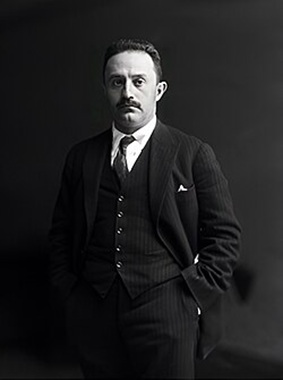

Descubre
Nuestra Historia
José Vasconcelos Calderón (1882–1959) fue un político, pensador y escritor mexicano, conocido como “El maestro de la juventud de América” por su gran labor educativa.
Participó activamente en la Revolución Mexicana desde el movimiento maderista y colaboró con importantes figuras como Francisco I. Madero, Venustiano Carranza y Álvaro Obregón. A lo largo de estos años ocupó distintos cargos políticos y también vivió varios exilios debido a conflictos políticos.
En 1920 apoyó el Plan de Agua Prieta y posteriormente fue nombrado jefe del Departamento Universitario y de Bellas Artes. Más tarde se convirtió en el primer secretario de Educación Pública de México, cargo desde el cual impulsó la educación popular, creó bibliotecas, promovió misiones culturales rurales y fomentó el arte mural, apoyando a artistas como Diego Rivera y José Clemente Orozco. También estableció el lema de la UNAM: “Por mi raza hablará el espíritu”.
Después dejó la SEP, fue candidato a la presidencia en 1929, pero denunció fraude electoral tras el triunfo oficial de Pascual Ortiz Rubio.
Tras estos hechos fue encarcelado y posteriormente se exilió nuevamente.
En sus últimos años dirigió la Biblioteca Nacional durante el gobierno de Manuel Ávila Camacho.
